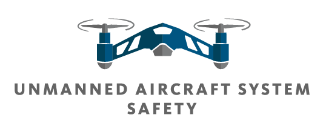

New User Guide for Drones in the UC System
Introduction

This guide will walk you through the steps for you start flying for your work or research. This page will be a work in progress and new resources will be added periodically. Feel free to reach out to us at UASSafety@ucmerced.edu if you have any questions or would like to see additional resources added.
UC Drone Policy
There is a University of California Drone Policy that governs the use of drones owned by the University of California, the use of drones at any University property, or the use of drones for any University purpose (including teaching, outreach and research). More information about the UC UAS Policy can be found in the UC UAS Policy Guidance Document located at http://UCDrones.github.io/Policy_Guidance/
Policy Requirements
The Policy establishes that anyone who seeks to operate a UAS under the jurisdiction of the policy must:
- Comply with any applicable regulation, including but not limited to any applicable FAA regulation.
- Have prior approval from the Campus Drone Person or the Systemwide Designated Authority.
- Operate in a manner that ensures public safety, right to privacy, civil rights and civil liberties.
- Maintain sufficient liability insurance coverage.
The UC Center of Excellence on UAS Safety is here to help you guide you through the process.
Step-by-step UC Drone Process
- Register your drone with the FAA and UC
- Get an FAA Drone License (or figure out if you’re exempt) and register yourself with the UC
- Find a place to fly - review airspace, safety guidelines and local regulations
- Submit a UC Flight Request
- Fly Safely
- Submit a Post-Flight Report
Outline
Complying with Regulations
Getting UC Approval
- About UC Drones
- Registering your drone with your campus
- Creating a flight request
- Post-Flight Reporting
- Where to get more help
Planning for Safety
- Planning a Safe Mission
- Safety Guidelines
- Fire Safety
- Working around people and non-participants
- UAS and Privacy